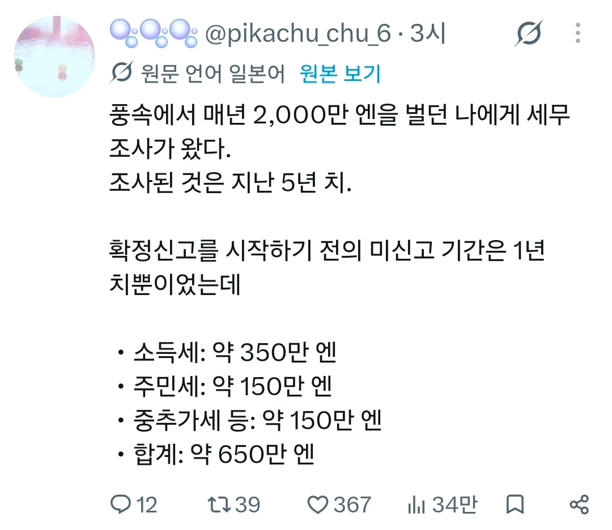

2천만엔 중에서 650만엔이 세금

2천만엔 중에서 650만엔이 세금
미신고 1년치
조사한게 5년치이고 그중 미신고로 내야하는건 1년치뿐이라는 소리
잘버누
우리도 싹 합법시켜서 세금 다내게햇으면
한국은 저렇게 걸리면 세금 내는게 문제가 아니라
불법 수입으로 100% 몰수 아닌가
풍속점 합법일껄?
불법인 한국 가정해서 얘기하는데
저나라 합법인 이야기는 대체 왜 다는거냐
가정이 의미있냐? 한국은 안걷어가고 여가부에서 지원금 추가로 얹어줌
창녀가 몇억 모았다고 올렸다가 경찰수사 받았는데 몰수 안함
한국에서는 지원금 주는뎁쇼?
1년에 1.7억정도 벌고 세금이 5500이면 낼만한데?
우리도 세금 걷어라
저거 세부내역에 징수명이 뭐로 될까? 보지팔이값으로 표기되냐? ㅋㅋㅋㅋㅋㅋㅋㅋㅋㅋㅋㅋㅋㅋㅋ
기타 서비스업?
근데 국내 창녀들도 세금 신고는 할텐데 어떻게 신고하려나
신고 안하지 않나? 현금으로 받는거 같은데
그 빡대가리년들 하는 방법도 모를듯
불법인데 신고를 어케 해 자수는 할수있겠다
의외로 얼마 안떼네 고소득자는 거의 절반 떼가지않나
궁금해서 작년 명세서보니 1.35억에 공제 5700이네
일본이 싸게먹히는듯
ㅈ같은 일본 세금 40% 정도 때임 ㅅㅂ
월급쟁이 떼이는거랑 거기서거긴데
중추가세가 찾아보니 미신고가산세(미신고시 40프로 추가)인듯 순수 세금은 500만엔정도
근데 일본도 의료보험이랑 연금 내니까(풍속도 고용보험 내는지는 몰?루) 다 떼면 우리랑 비슷할듯
우리나라도 저정도 벌면 저만큼 떼감. 더 많이 떼갈걸?
2억벌고 6500떼간거면 적은거 아님? 한국은 더 많이 뗄 것 같은데
떼인 거 중에 30퍼는 미신고로 가산세 때려맞은 거고 본세만 따지만 세율 한 25퍼. 1.7억 정도 벌면 저건 싼 편이네
우리도 창녀 세금만 걷어도 반도치 세수만큼 나오겠다
우리나라는 1~3억 구간에서 38%인데?
일본 소득세 낮네
ㄹㅇ 우리나라에서 2억 벌면 건보료도 저기 주민세보다 더 내야할텐데
일본 세금 무시무시하지...
나도 이번에 이직해볼라고 알아봤는데, 지금 직장보다 +200만엔 더 준다는곳이 있어서 헤드헌터랑 면접봤는데
200만엔에 실수령 상승분은 120만엔이야......80만엔이 세금이더라....
미신고로 추가퍼센트 처먹은거 아님? 세금 엄청쌘건 아는데 너무 쌘데
5년치가 650만엔이면... 괜찮은거 아냐?